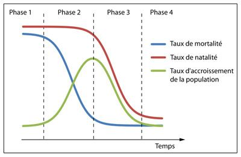

Introduction
Au cours du XXe siècle, et désormais en ce XXIe siècle, le taux de croissance, peine à diminuer, malgré qu’on puisse observer un taux en baisse.
Il est vrai que, la croissance démographique de cette période à été particulièrement fulgurante.
Le XXe siècle fût un siècle assez particulier puisque les démographes ont été contraints de suivre les schémas de la transition démographique, leurs travaux en étant dépendants
Que ce soit en France ou aux États-Unis, durant les années quarante il y avait déjà une accumulation, pas très importe mais quand même présente, de statistiques démographiques qui commencer à nous montrer ce qui aller ce passer dans le futur puisque nous pouvions, déjà observer un signe de transformation assez importante, malgré tout, de la dynamique des populations.
La transition démographique peut être divisée en quatre périodes : un période primitive, une période d'élévation, une période de décélération
La deuxième phase est caractérisée par un effondrement du taux de mortalité et d'une natalité qui reste importante. La chute de la mortalité est la conséquence d'une meilleure hygiène, de l'assainissement des eaux usées, d'une alimentation diversifiée, l'arrivée massive de médicaments pour le cas des pays en développement Durant cette phase, le taux d'accroissement naturel augmente fortement (d'autant plus vite que la chute de la mortalité est importante).
La première phase est caractérisée par des taux de mortalité et de natalité élevés. C'était le cas chez nous au 18ème siècle (ex : la mortalité infantile était de 250 morts pour 1000 naissances). Conséquence, il fallait faire beaucoup d'enfants pour les voir arriver à l'âge adulte. La natalité était donc importante, avec une fécondité de plus de 4 enfants par femme. Durant cette phase, le taux d'accroissement naturel (différence entre le taux de natalité et le taux de mortalité) est proche de 0, évoluant soit positivement lors des bonnes années (paix), soit négativement lors de mauvaises années (épidémies) comme celle que nous vivons actuellement par exemple.

La dernière phase de la transition démographique est la période post-transitionnelle. Cette période est la plus complexe car il on ne retrouve pas schéma standard entre les différents pays, hormis les taux de mortalité et de natalité assez bas par rapport à la situation initiale. L'Italie par exemple a un indice de fécondité (nombre d'enfants par femme) de 1.4%, la France de 2.08%, la Belgique de 1.65%, l'Allemagne de 1.41 %
La troisième phase se caractérise par la diminution de la natalité. Elle va marquer une inflexion dans la courbe du taux d'accroissement qui commence alors à décroître. Durant cette phase, la mortalité va poursuivre sa diminution mais de manière beaucoup moins significative. Comme on peut le voir sur l'illustration de la transition démographique, il y a un décalage entre la diminution de la mortalité et de la natalité. L'adaptation des comportements prend en effet du temps. Il ne faut d'ailleurs pas remonter très loin, même chez nous, pour retrouver des familles nombreuses, vos grands parents étant probablement issus de familles de 5-6 enfants, voire plus, alors que les familles actuelles se composent de 2 enfants en moyenne.le taux d'accroissement naturel augmente fortement (d'autant plus vite que la chute de la mortalité est importante).
La fécondité va dépendre en effet des politiques (pro-natalistes ou pas), ainsi que de la façon dont la société considère l'enfant par rapport au mariage, par rapport au travail, par rapport au sexe.
L'indice de fécondité va nous renseigner sur l'évolution future de la population du pays puisqu'il va nous donner le nombre d'enfants moyen par femme. Il faut savoir que le seuil de renouvellement des générations , qui est le nombre moyen d'enfants par femme nécessaire pour que chaque génération en engendre une suivante de même effectif (ou le nombre d'enfants que doivent faire 100 femmes pour y avoir 100 femmes en âge de procréer lors de la génération suivante), est au minimum de 2,05 enfants par femme. Parce que pour 105 garçons il naît 100 filles, soit 205 enfants pour 100 femmes. Les seuils réels sont supérieurs à ce minimum en raison de la mortalité entre la naissance et l'âge de procréation. Dans les pays développés, cette mortalité juvénile est à présent très faible et le seuil de renouvellement est à l'heure actuelle de l'ordre de 2,10 enfants par femme.